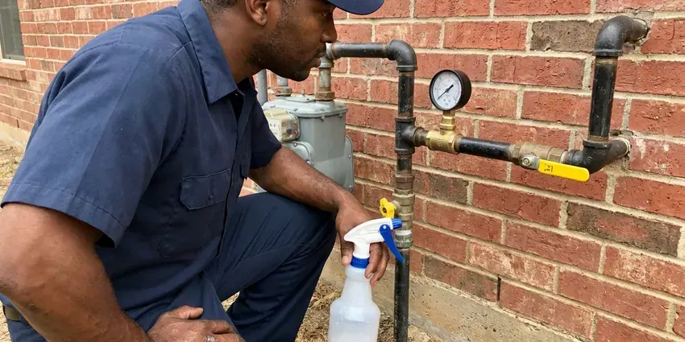

Emergency Plumbing Repair in Greenville, RI
When plumbing fails at the worst time, we answer the phone, help you limit damage and send a plumber fast in Greenville, RI.
- 24/7 Response
- Written Pricing
- Quick Response Day or Night
- Warrantied Repairs
Plumbing Emergency Right Now? Get a Plumber on the Way in Greenville, RI.
Call JPN Plumbing any hour and a dispatcher will stay on the line while you find the shutoff.
24/7 Emergency Plumbers in Greenville, RI
JPN Plumbing gets the call when something in a Greenville home suddenly gives out. Leaks, backups, dead water heaters. On an emergency visit, the order is always the same: stop the water, then make a repair that lasts so the problem does not come back next week.
Work we handle every week:
- Leaking water heater drain-down and repair
- Leaking water heater shutoff, drain-down and replacement
- Gas leak repair and pressure testing

Additional Plumbing Repair Services in Greenville, RI
We offer expert plumbing repair services across Greenville, RI to stop leaks, clear blockages, and keep every fixture working the way it should.


Customers
Why Choose JPN Plumbing for Emergency Plumbing Repair in Greenville, RI?
Our emergency repairs use the same parts as a scheduled job, not tape and a prayer, so your system works the way it should afterward.
- Ready Trucks, Our vans carry the parts required for the most common plumbing emergencies.
- Trained Technicians, Our plumbers repair every common emergency and work to Rhode Island plumbing code.
- Phone Guidance, We help you find and close the main shutoff or water heater valve immediately.
Citywide Coverage
All of Greenville and the nearby communities are in our emergency area. We know the roads. Knowing the shortcuts, gated entries and streets with hard-to-see numbers takes minutes off a night call.
Experienced Team
Our licensed plumbers have handled a lot of late-night calls. Training is ongoing. That includes new leak detection tools, drain cameras and water heater systems, since an emergency visit goes faster when the plumber already knows the equipment in your home.
Safety-First Approach
Sewer line breaks and gas leaks get extra care. Protective gear goes on. Our plumbers follow local codes on every emergency repair and use gloves, eye protection and containment around sewage so the household stays healthy while we work.
Trusted Certified Greenville Plumbing Services Professionals
At JPN Plumbing, we take pride in licensed, certified plumbing services throughout Greenville, RI. Those papers on the wall mean something. Our plumbers hold recognized industry credentials, and they follow strict safety and quality rules on every repair, installation and maintenance call we run.
Call Us Now PHCC Plumbing Contractor Recognition
PHCC Plumbing Contractor Recognition Better Business Bureau (BBB) Accreditation
Better Business Bureau (BBB) Accreditation Angi Certified Pro
Angi Certified Pro ISO 9001 Quality Management Certification
ISO 9001 Quality Management CertificationEmergency Plumbing Calls We Handle in Greenville, RI
Commercial Emergency Plumbing in Greenville
A restaurant with a backed-up floor drain cannot serve. Every hour closed adds up. We handle commercial emergencies like grease line clogs, failed commercial water heaters and broken supply mains, and we stage the work so the rest of the building keeps running while one section is down. Greenville businesses reach us day or night.

Water Heater Emergency Fixes in Greenville
A tank that starts leaking can empty 40 or 50 gallons onto the floor. Shut the cold valve on top. We diagnose the leak, whether it is the tank itself, a failed relief valve or a loose fitting, and repair it if the tank is sound or replace it if the tank has rusted through. We work on Rheem, Bradford White and other major brands in Greenville.
Pipe Bursts in Older Greenville Homes
Older houses still have galvanized steel in the walls, and it rusts from the inside out. It fails without warning. We stop the water, remove the bad section and join in PEX or copper with transition fittings, then look at how much galvanized is left. We'll also point out what needs drying to head off mold.
Water Heater Failure in Greenville, RI
No hot water on a weeknight is a problem, and a leaking tank is an emergency. We take both seriously. On tanks we test elements, thermostats, gas valves and relief valves, and on tankless units we read the codes, then repair or schedule a swap. Service is available across Greenville, RI.
Major Leak Detection and Repair in Greenville
Hidden leaks do their damage before anyone sees them. Bills give them away. Our plumbers use acoustic sensors and thermal cameras to find leaks behind walls, in ceilings and under slabs, so the opening we make is small and right over the pipe instead of a guess. Repairs in Greenville are tested before closing.
Commercial Emergency Plumbing Repair in Greenville
Apartments, offices and stores cannot sit without water. Tenants notice right away. Restroom backups, grease clogs and failed heaters get handled quickly, and we work with managers so the shutoff hits as few units as possible.
Severe Clog Removal in Greenville, RI
A main line clog backs water into the lowest drain in the house, usually a tub or floor drain. That's sewage. We clear it with a cable machine or a hydro-jetter depending on whether it is grease, wipes or tree roots, then run a camera to see why it happened. Drains in Greenville, RI flow again the same visit.

Main Water Line Break in Greenville, RI
A broken main can flood the yard or leave you with no water. Shut it at the meter. We help you turn the water off at the meter box, then a crew locates the break with leak detection gear so we dig one hole in the right place instead of trenching the yard. Service is restored as soon as possible.
Nearby Emergency Plumbers in Greenville, RI
Someone searching emergency plumbing repair near me needs a plumber who answers and shows up fast. We pick up and roll. Our local plumbers are ready day and night and arrive with the tools and parts to fix most problems on the spot, from a split supply line to a backed-up main.
Being local means shorter drives and knowing the homes in this area. It speeds things up. Knowing which areas have galvanized pipe, attic water heaters and hard-to-find shutoffs means we start diagnosing before we park. Pick up the phone the moment it breaks.
JPN Plumbing at a Glance
- Licensed and insured plumbers serving Greenville, RI
- 24/7 emergency service with same-day scheduling
- Clear written estimates, no hidden fees
- 4.8-star rated by 684+ Rhode Island customers
Greenville Map
Greenville Information
- Population
- 9,061
- Area codes
- Local
- Service area
- Greenville and towns within a 40 mile drive
- Nearby
- Providence, Cumberland Hill, Central Falls, Cranston
Salt air near the coast can corrode exposed metal fixtures, outdoor spigots and fittings faster than inland. Weather like that is behind a lot of burst pipes, failed water heaters and sewer backups in Greenville homes, and a fast shutoff limits the damage.
Expert Services
Reach out to JPN Plumbing for honest, reliable plumbing from people who know the trade in Greenville, RI.
Our Specialized Plumbing Services in Greenville, RI
At JPN Plumbing, you get every kind of plumbing service from one company across Greenville, RI. We go from leak detection all the way to full system installations, for homes and commercial buildings, and we do it quickly at a fair price. Take a look at our core services below:


Our Emergency Plumbing Steps in Greenville, RI
Our emergency process is set up to contain damage quickly and restore your plumbing.
Call Right Away
Call (401) 364-2507 the moment you see water. Dispatch takes the details and gives you an arrival estimate.
Closest Plumber Sent
The closest emergency plumber in Greenville heads your way with tools and common parts on board.
Price and Repair
The plumber assesses the damage, explains it and gives you a price. Then the repair gets done.
Frequently Asked Questions About Emergency Plumbing Repair in Greenville
After-hours dispatch typically runs $150 to $350, plus the repair. Repairs are priced separately. Burst pipes and main line clears tend to run $250 to $1,200, and you hear the price before work starts.
Policies often cover sudden, accidental water damage. Read your own policy. Check with your insurer or read the policy wording, and we can provide detailed invoices, photos and a written description of the failure to support your claim.
We repair water heaters from Rheem, Bradford White and Navien. That covers faucets as well. On the fixture side, our plumbers work on Moen, Delta, Kohler and others found in local homes and businesses, and the trucks carry the common cartridges and repair kits.
Big leaks, especially slab leaks, soak the soil under the house and can shift or crack a foundation. Rocky glacial soil and ledge are common in Rhode Island, which can make digging for sewer and water lines slower and costlier. Stopping it quickly and drying things out limits the risk.
Sudden water damage from a burst pipe or failed appliance is often covered. We supply photos and documentation for the claim.
Emergency repairs carry the same written workmanship warranty as scheduled work. Materials carry manufacturer warranties too.
Shut off the water, then call. Never touch a gas leak. DIY repairs on pressurized lines, gas or anything near electrical often make the problem worse or create a hazard, so the best move is to close the main valve and call us.
Not all of them, but maintenance cuts the odds. Small drips become big ones. A yearly inspection, keeping grease out of drains and insulating exposed pipe before cold weather all head off the calls we see most. Coastal winds can drive cold into walls and freeze pipes that seem well protected, particularly during deep cold snaps.
What Our Customers Say About Our Plumbing Experts

Greg S.
I manage a small strip center with six tenants. JPN Plumbing handles our annual backflow testing and fixed a recurring clog in the shared sewer line that had been backing into the nail salon. Their reports come in clean and on time.
Commercial Plumbing · Providence, RI
Diane F.
My kitchen faucet had dripped for months and I finally got tired of hearing it at night. JPN Plumbing came out the next morning, replaced the cartridge and the O rings, and tightened a loose base that was letting water under the sink.
Faucet Repair · Woonsocket, RI
Tyler J.
We bought a taller comfort height toilet for my dad, who just had knee surgery. The plumber pulled the old one, found the flange was cracked, and replaced it before setting the new bowl. Took about two hours.
Toilet Installation · Greenville, RI
Lisa C.
Water was pouring out from under the washing machine on a holiday weekend. JPN Plumbing talked me through closing the valves over the phone and had a plumber at the house within ninety minutes. It was a burst fill hose.
Emergency Plumbing · Providence, RI
Jessica T.
We were adding a gas range in a kitchen remodel and needed a new line run from the meter. The plumber pulled the permit, ran the pipe through the crawl space, and had it inspected and approved within the week.
Gas Line Repair · Greenville, RIPatricia H.
We had a slab leak that two other companies could not find. JPN Plumbing located it in under an hour with a listening device. They rerouted the line through the attic instead of breaking up the floor, so we kept our kitchen tile.
Slab Leak Repair · Providence, RI